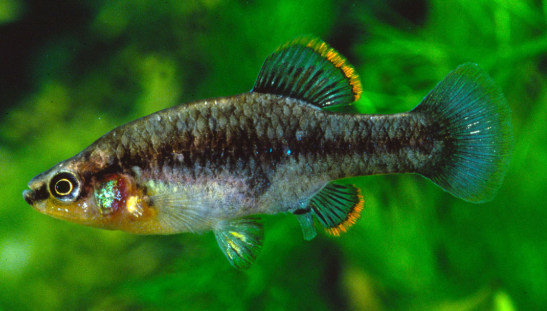

Systématique
- Ordre : Cyprinodontiformes
- Famille : Goodeidae
- Genre : Zoogoneticus
- Espèce : Z. quitzeoensis
- Auteur : (Bean, 1898)

Zoogoneticus quitzeoensis est l'espèce type du genre. Son nom spécifique fait référence au lac Cuitzeo (historiquement orthographié Quitzeo). C'est un goodeidé de taille moyenne, robuste et très dynamique.
Le mâle atteint environ 5 cm, tandis que la femelle est plus massive, atteignant 6 cm. Le corps est beige-olive avec de grandes taches sombres irrégulières. Les mâles matures développent une superbe bordure **rouge-orangé** ou jaune intense sur les nageoires dorsale et anale, soulignée par une bande noire, ce qui les rend très spectaculaires lors des parades.
L'espèce est classée "En danger" (EN). Ses populations sauvages sont très fragmentées et subissent la pollution agricole, l'eutrophisation des lacs et la compétition avec des espèces introduites (ex: Pseudoxiphophorus).
Zoogoneticus quitzeoensis est un poisson vif et intrépide. Il possède un tempérament territorial assez marqué pour sa taille. Les mâles passent beaucoup de temps à parader les uns devant les autres, nageoires grandes ouvertes pour exhiber leurs bordures colorées.
En aquarium, il nécessite un décor riche en cachettes (racines, pierres, plantes denses) pour permettre aux femelles et aux individus dominés de se soustraire à la vue du mâle dominant. Il peut se montrer agressif envers les poissons aux nageoires voilées.
Mode : Vivipare matrotrophe.
La gestation dure environ 50 à 60 jours. Les embryons reçoivent des nutriments via des trophotaeniae. Les portées comptent généralement entre 10 et 20 alevins.
Les alevins naissent à une taille respectable (10-12 mm). Ils sont immédiatement autonomes et acceptent les nauplies d'artémias ou de la nourriture fine. Comme chez *Z. tequila*, les adultes peuvent s'attaquer aux alevins si l'espace ou le nourrissage sont insuffisants.
Dimorphisme sexuel : Le mâle possède un andropodium et des bordures colorées (rouge/orangé) sur les nageoires dorsale et anale. La femelle est plus grande et beaucoup plus terne.
Espérance de vie : 3 à 5 ans.
Originaire du plateau central du Mexique (bassins des lacs Cuitzeo, Pátzcuaro, et rivière Lerma). Il préfère les eaux calmes ou à faible courant, alcalines, avec une végétation aquatique dense pour se cacher et chasser.
Répartition

Origine naturelle :
- Mexique : États de Michoacán, Jalisco, Guanajuato.
- Bassins endoréiques et système du Rio Lerma.
Paramètres de maintenance
Température : 18 à 23 °C (supporte mal les chaleurs prolongées).
pH : 7,2 à 8,2.
GH : 10 à 25 °dGH.
Volume conseillé : 80-100 L pour un groupe.
Régime alimentaire
Régime : Carnivore/Insectivore.
En aquarium, il apprécie les nourritures vivantes ou congelées (daphnies, artémias, vers de vase). Accepte aussi les granulés de haute qualité.